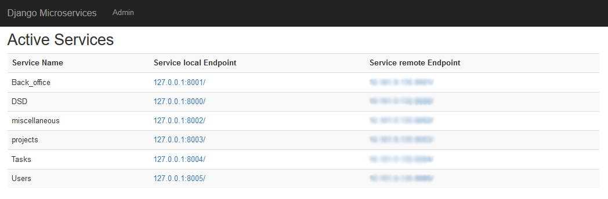

Up & Running
Documentation under construction
The Developpment and the documentation are still going, so you may notice some changes.
Linedata Project Management
This is an end of study project done by engineer students of the Higher Institute of computer Science (Ariana).
Our project is a management/resources tool that allows us to plan, track and deliver projects quickly and easily. Some of features are:
- Flexible planning with Board
- Accurate estimation customizable according to our needs
- Reporting for better communication and project management
Masthead of this project
| Name | Role |
|---|---|
| Rania ben Amar | Project Manager |
| Zied Chtioui | Project Leader |
| Khouloud Chebil | FrontEnd Developer |
| Rayen Mhamdi | BackEnd Developer |
Repositories
github repositories
Our System is still under construction. we already implemented a microservices architecture based on django projects and angular. you can visit our github repository for more informations here.
Getting started
Download
-
Prepare the project directory
mkdir lpm_project- Create the project folder.cd lpm_project- Navigate to the project folder.
-
Prepare the back directory
mkdir Services- Create the microservices folder.
-
Download all microservices
git
untill now, we have 5 microservices (servicediscovery, project, Tasks, Users and miscellaneous).
to download them you mut download git and install it using those steps.cd Services- Navigate to the Services folder.git clone https://github.com/RayenLinedata/servicediscovery.git
clone the servicediscovery microservice.git clone https://github.com/RayenLinedata/project.git
clone the project microservice.git clone https://github.com/RayenLinedata/Tasks.git
clone the Tasks microservice.git clone https://github.com/RayenLinedata/Users.git
clone the Users microservice.git clone https://github.com/RayenLinedata/miscellaneous.git
clone the miscellaneous microservice.
-
Download frontEnd application
cd lpm_project- Navigate to the project folder.git clone https://github.com/RayenLinedata/frontApp.git
clone the frontApp Application.
Installation
Technologies
Our project is developped by Angular 7 in the frontend and with Django for the microservices.
before we begin the installation you must download
nodeJs follow those steps to install it.
python follow those steps to install it.
cd lpm_project\frontApp- Navigate to the frontEnd folder.npm install- Install the frontApp dependencies.
Run the apps
cd lpm_project\Services\DSD- Navigate to the servicediscovery microservice folder.python runcluster.py- Run all microservices.
you can visit http://localhost:8000/ to see the IP of each microservice.

cd lpm_project\frontApp- Navigate to the frontEnd folder.ng serve -o- Run the angular application.
you can visit http://localhost:4200/ to see the application.

Congratulations
And voilaaaaaa...
Read more about our documentation to see how to use the app or to be part of developpment team.